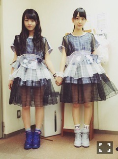
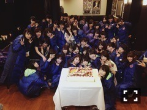

| 2015/02 25 Wed | 深海魚ネグリジェ。 629回目 |
2015年2月22日
乃木坂46デビュー3周年を
迎えました。

恒例のバースデーライブは
今回はなんと西武ドームで！
奈々未と私の影ナレから
スタートし、1日で全曲披露
ということで7時間半にも
及ぶライブとなりました。
スカパー生中継も入りました！
雨や、雪は降らないか
心配でしたが、
降らなくてよかったです。
それでも、寒い真冬に
長時間という悪条件の中、
最後まで観ていてくださった方に
感謝の気持ちでいっぱいです。
本当にありがとうございました。
メンバーも7時間半
誰一人欠けず
最後までステージに
立つことができました。
皆さんの熱気のおかげで
まったく寒さを感じなくて
いや、寒いはずなんだけど、
寒さを忘れるくらい楽しかった。
カイロとかいるかなって思ってたけど
いらなかったし、汗かいたし...
こんなところでも汗かいちゃう
くらい汗っかきなんだよな〜
汗かき選抜だもん笑
サプライズ発表もたくさん
ありました。
謎の新舞台、
新プロジェクト一期生募集
アンダーライブ3rdシーズン
そして、研究生6人の昇格！
れなち、琴子、蘭世
純奈、絢音、みり愛
おめでとう〜！
アンダーライブ一緒に頑張ってきた
仲間として本当に嬉しかったです。
最後には
11thシングル「命は美しい」
初披露しました。

衣装は未央奈と同じ種類。
靴だけ違う！
生まれたままで
ここにいる理由、何空と同じ
bodysongさんデザインです。
可愛い...
奥行きがあって
迫り来るような重みのある
メロディー。
ダンスパフォーマンスに
注目してほしい曲です。
ジャケ写も公開されました！
今回デザイナーさんが変わり
新しい乃木坂が見れると思います。
海辺での撮影でした。

今日はスカパー！音楽祭の
生放送で11thシングル
テレビ初披露です！
見てね〜
どんどん加速していく
乃木坂46に私も追いつかなきゃ。

4年目も応援よろしくお願いします！
......
乃木どこバレンタイン後半戦
見ていただけましたか？
私は玲香に渡しましたー
おしゃれなので
あの洋書がぴったり
と思って選んだんだー
そしたらまさかの両思いで
びっくりした ！
玲香は一緒に帰ることも多く
一緒にご飯食べる率が高く
気を遣わずいろいろ話せる仲です。
あのモアイ像みたいなの
どこで見つけたのかな。
なんであれセレクトしたのかな
ってちょっと思ったけど、
愛着湧いてきたよ ！
チョコも可愛かった〜
最後にまいまいからもらいました！
うわーまいまい〜泣
まさかもらえるとは思わなくて
びっくりした...ありがとう泣
今度まいまいの家いく！！！！
つもり！！！！
玲香に渡したテオブロマの
チョコはどれもパッケージが
可愛くて美味しくてオススメです。
......
発売中のSamuraiELO
ストリートジャックに
載っています。
来週発売のヤングジャンプに
巻末グラビアさせていただきました。
3月9日発売のBOMBに
みさ先輩と載ります。
次号のUTBにも載ります。
そのほかにも3月は告知が
たくさんできそうなので、
いろいろ楽しみにしててください。

まりか
コメント(789)
2015/02/25 12:18